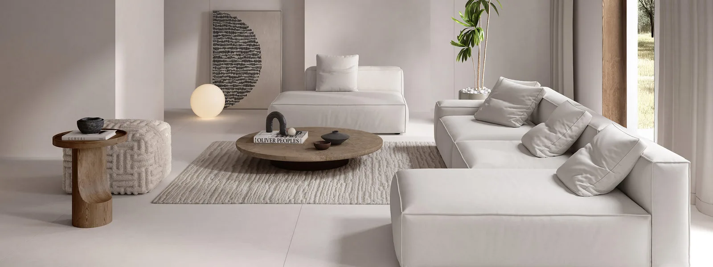
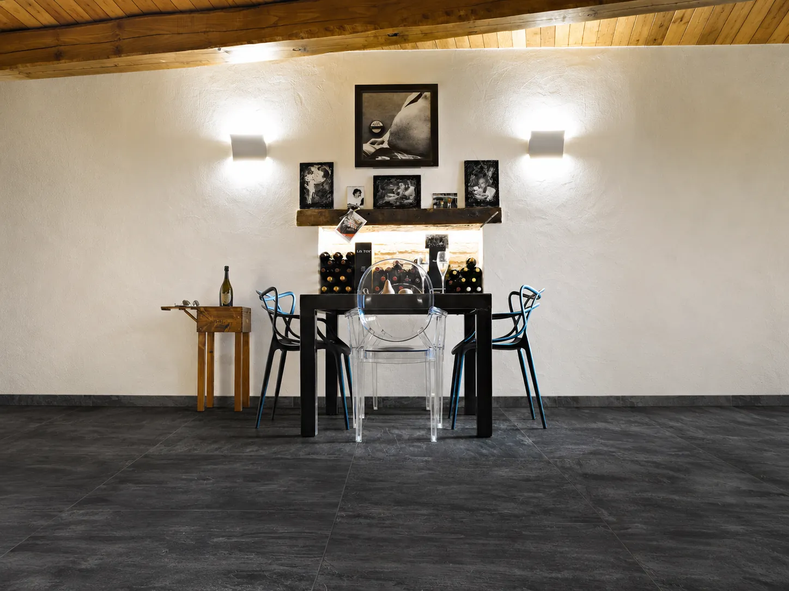

BEKAMAR / PORSELEN YÜZEYLER
Yüzeyde
tasarım özgürlüğü.
Doğal malzemelerden ilham alan dokular ve çağdaş mimariye uyum sağlayan yüzeyler. T-ONE ve Florim porselen koleksiyonlarını keşfedin.
MARKALARI KEŞFEDİN ↓01 — 02
T-ONE / PORSELEN YÜZEY01 / YERLİ YÜZEY MARKASI
T-ONE
Türkiye merkezli bir yüzey markası olan T-ONE, modern mimarinin estetik ve işlevsel ihtiyaçlarına yönelik porselen seçenekleri sunar. Doğal taş görünümlerinden sade ve çağdaş tasarımlara uzanan koleksiyonları; farklı renk, desen ve yüzey karakterleriyle mutfak, banyo ve iç mekân projelerine uyum sağlar.
T-ONE KOLEKSİYONUNU KEŞFET ↗
FLORIM / İTALYA02 / İTALYAN SERAMİK VE PORSELENİ
FLORIM
Florim, İtalyan tasarım yaklaşımını çağdaş seramik ve porselen yüzey üretimiyle buluşturur. Doğal taş, mermer ve beton görünümlerinden ilham alan geniş koleksiyonları; farklı ebat, renk ve yüzey bitişleriyle zemin, duvar, tezgâh ve mobilya gibi mimari uygulamalara seçenekler sunar.
FLORIM KOLEKSİYONUNU KEŞFET ↗KOLEKSİYONLARI YAKINDAN TANIYIN
Projenize uygun yüzeyleri
birlikte keşfedelim.